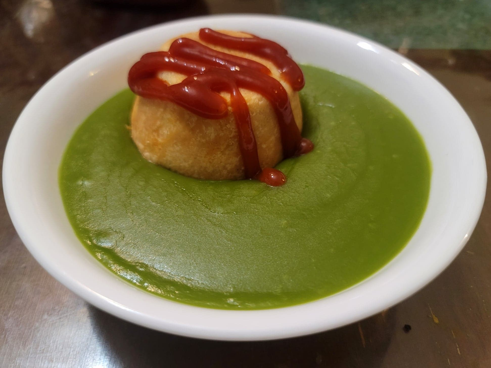

Pie Floater

Ingredients:
Meat Pies:
Pea Soup:
- 1 lb Frozen peas
- 1/2 tbsp Olive oil
- 1 Onion, diced
- 1 small/medium Potato, peeled and cubed
- 3 cups Chicken stock
- 1 tbsp Mint, chopped
- Salt, as needed
- 1 tbsp Crème fraîche
Instructions:
- Heat the oil in a saucepan over medium heat. Add the onion and sauté until translucent, 5-7 minutes. Then add the peas, potato, mint, and stock. Bring to a boil and then reduce to a simmer over low. Simmer for 20 minutes, or until the potato is fork tender.
- Blend the soup together with an immersion blender. Optionally, continue to simmer the soup until it reaches a desired consistency. Remove from the heat. Taste and adjust salt as needed.
- Pour some of the soup into a bowl with the crème fraîche to temper it. Then whisk it back into the soup.
- Serve the soup with a pie placed into it upside down. Top with ketchup.